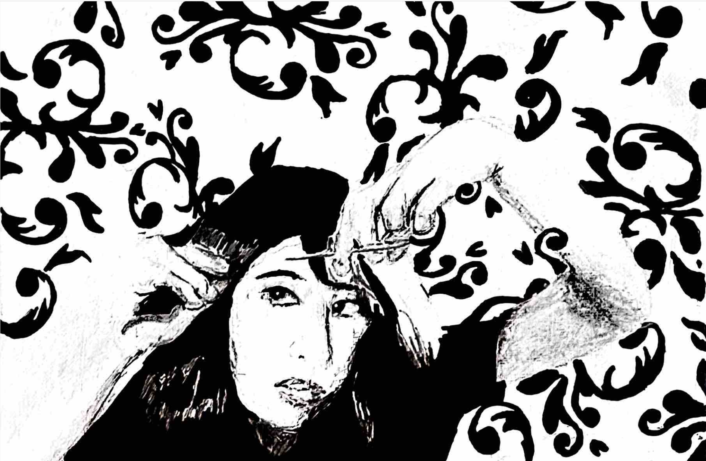

Edward Perko, 17, Student
"Process"- Materials: Clay, glaze and acrylic paint
The main thing that makes this piece human is the medium, being clay. Clay is a fluid and somewhat uncontrollable medium to work with. Clay/ceramic projects need to have good structure and technique to withstand firings in a kiln. When being fired to such high temperatures, there is a good chance that your piece can distort, break, or explode. Another thing that makes this piece human is the theme that I associate with this piece, being that art is more about the process than the final image. My work changed pretty drastically from its initial to its final state. I initially intended for my piece to be much more structured and intentional. However, the bottom half of my work collapsed before its first firing because it was extremely brittle. It also shifted and bent during its first firing. Instead of giving up, I continued to innovate with my piece by attaching many of the broken off pieces to the larger form after being fired again. I made this decision intentional by making the broken pieces more vibrant in color than the base. Overall, I was able to make my piece portray the process of its creation.


Natalie Warren, 17, Biology Major
"Forged Identity"— This piece was created using acrylic paint markers. It represents the identity I have tried to create to differentiate myself from my twin sister. This piece is one of nine pieces I created for a themed art portfolio.
I think one of the things that makes my work exclusively human is allowing imperfections. Having patterns that aren't perfectly symmetrical or stylized details are that type of human-made charm that AI simply can't replicate. Additionally, art is deeply personal. No matter what prompt is fed into AI, the meaning conveyed in the image it generates will be artificial. AI cannot create human experiences.

Paula Gregoire-Jones, 71, SEL Student and Faculty Member
"Purple Fantasy"- a mosaic style leaded stained glass.
(I had) no pattern or initial plan for this work other than I wanted to use purple glass. I start with interesting pieces of glass scraps, glass jewels and beveled glass and fit them together in a mosaic style - filling in with lead, wire inserts and soldering together.

Yan Orellana, 19, Business Economics Major
Painting- Every piece of my art is basically a self portrait of what I'm feeling at the moment, and to be able to achieve that type of inflection, one must be alive.

Dallas Youngblood, 45, Journalism Major
"Stand Against"- A silent non-violent protest against ICE- Photography, Graphic Design, Paint, Pen and Stencil

Orfalea Early Learning Center Students, Ages 3-5, Submitted by: Alyssa Binder
Children's creative expressions in multiple mediums including liquid water colors, paper strips collage with glue, tempera easel paints with brushes and hands, and rolling golf balls in tempera paint.
SBCC's Orfalea Early Learning Center embodies a "process over product" philosophy when it comes to children's creative expressions. The adult's role is to provide interesting mediums for children to explore and time to delve deep into that exploration. Children approach art activities with curiosity and an open mind— there are no models or instructions for children to follow and they have no preconceived notions about how their art is "supposed" to look. Their work is truly authentically human!


Richie Renteria, 18, Economics Major
Pottery — I use clay on a wheel to make pieces that can be used to eat or for display.


MARGE PAMINTUAN PERKO, ART MAJOR
"Les Grenouilles" are a set of two ceramic sculptures of frog characters who met at a ball in Louis XIV's Versailles.
I am a former cartoonist so all my work is rooted in the observation of human life, emotions, and interactions. I don't believe generative AI can capture the wit and the whimsy produced by human beings. These two frogs dressed in court costumes seem ridiculous, but there is also a sympathy I have with these characters, because my brain has personified them as two beings who are also quite shy and just wanting to be appreciated. Frogella and Froggino are meeting for the first time—and it takes a human to tell the story of them after seeing these two figures.
KRISHNA GARCIA MARTINEZ, 15, Earth and Planetary Sciences/Mathmatics Major
"Portrait of Richard Wagner (1813–1883) in pencil." My artwork took three days to painstakingly complete and is in honor of the greatest of musical composers whom it depicts, W. Richard Wagner. He was a man whose life was dedicated to the creation of wondrous and passionate art expressed in a way only a true human could. In-between my studying, I worked on my portrait of him tirelessly and carefully as my hand could with solely three pencils entirely in black-and-white, utilizing an 1875 portrait of Wagner as a reference. This was something that I was personally and individually inspired to do because I am so moved and inspired by the majestically beautiful music of Wagner. I wished to not only pay tribute to his art in some small way, but to share and inspire all members of our diverse campus community with it through my pencil drawing.

Aliyah Curtis, 18, Graphic Design Major
I do both digital and traditional art, so here are a few of my favorite pieces!
Intentionality is one of the most important aspects of art, a trait AI could never replicate. I try to make every pen, brush, or pencil stroke intentionally so as to get across the ideas, love, and creativity I want the piece to have. AI just mashes images together, making an artificial image, but humans cultivate real thought into their creations. I hope that’s obvious through my work. The emotion, the story, and the underlying themes are things I think my art portrays. From the expressions, the colors, the line variation or the medium combinations, these are all things I don’t believe AI could ever generate.


Thomas Ballew, 24, Engineering Major
(from left to right) "Fr. Seraphim Rose"
The first one of the bearded man with the black beanie is titled Fr. Seraphim Rose. I tried to capture the spiritual nature of the man I was drawing and bring out the mystery of his soul. Despite its imperfections, the deeper human quality of character that this man possessed, I feel, is more precisely expressed.
"St. Athanasius of Constantinople"
The second one was inspired from an ancient Orthodox Christian icon of St. Athanasius the Confessor of Constantinople. I don’t believe that AI could replicate the piety that this image displays and evoke the desire to pray by its sentiments. Human hearts react to human devotion.
"Death Stare"
The third one was of a fake skull I drew as it rested on some pillowcases. Although AI might be able to depict a more realistic image of a skull than me, I don’t think it would be able to depict it the same way, given the constraints I faced on account of the medium I used.
“Choco Praline: Paris 1889”
This was a still life drawing of an oval shaped clock standing beside some stacked books. I don’t think that AI would have been so keen as to ensure that the slight imperfections of the clock face be replicated as closely as possible. I also think that the medium gives the image a surreal appearance as realistic as it seems.


Isaac Ram, English Major
(from left to right) "Free Parking," "Relative Rabbits," "The Call," and "Marsh Encounter"
My process begins by making a pencil drawing on a sketchpad. I start off very lightly drawing in the general shapes that will form the work, and then as it gets more complete the forms progressively get darker and more fully defined. I then take my completed pencil drawing, put it underneath a blank sheet of paper on a light table, and use a gel pen to ink the finished shapes. I do everything by hand, myself.
While you could give an AI image generator a prompt like "make a stylized ink drawing of a zebra and a rhino in parking spaces," I don't think the resulting image would be artistic in the same way as my drawings because my drawings are the product of a conscious human being using their body to create something. My art has a tangible presence— the images you see here are scans of an actual sheet of paper with ink on it, and I think that you can tell this when you look at it. My art was the product of hours of me trying to mediate this kind of relationship between my own mind and the materials I was using. If you go out and make something this way, you have the feeling of going through a process that is almost meditative, a process that doesn't exist if you just type some words into an AI generator and press enter. And there is something essential to this process, something elemental, that bestows a unique quality to the finished product resulting from it. This is what I'd call art.